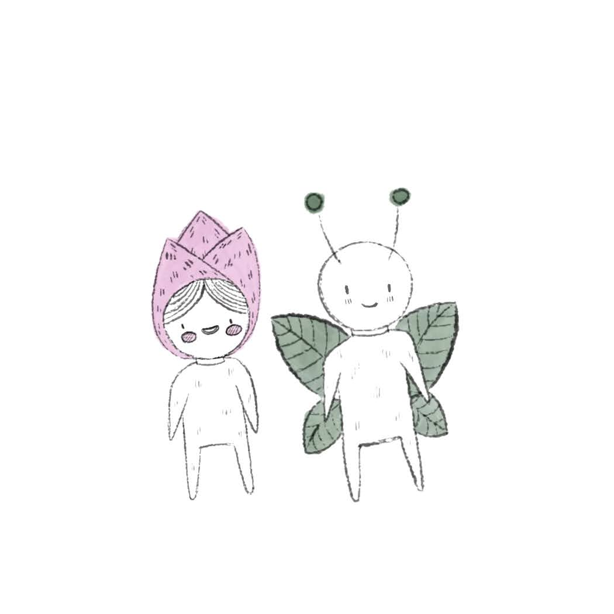

The Science of Curiosity
A National Geographic talk on the science of science communication.
Visit →Research & Resources
My research, plus resources on the science of communication itself.
A running list of resources on the science of communication that I contributed to — talks, comics, articles, and more.
A National Geographic talk on the science of science communication.
Visit →
How to be strategic when choosing your science communication goals, objectives, and tactics; free comics!
Visit →
The social science behind communication and decision-making, all in a free comic book.
Visit →


A National Geographic talk on why facts are not enough to change minds.
Visit →


Nicolas Cage, a long lost vampire or just a famous dude: how to talk about controversial topics.
Visit →